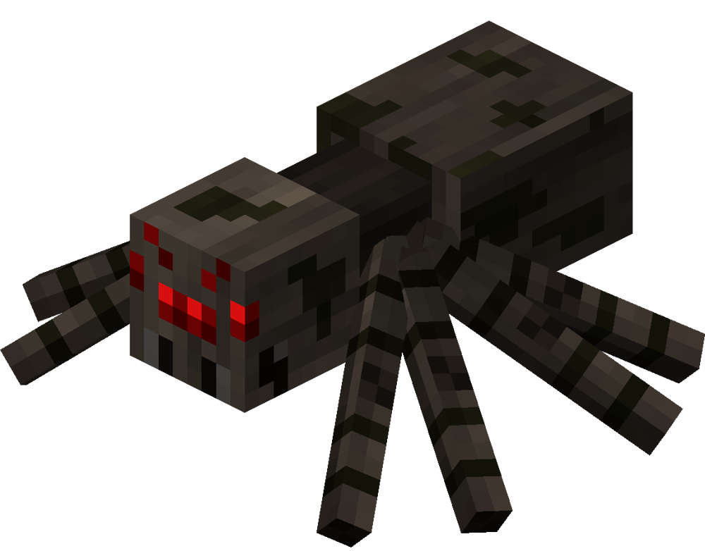

Step into our Environmental Dashboard – where data gets a Minecraft
makeover, adding a playful touch to your journey towards
sustainability. Immerse yourself in a pixelated paradise where
eco-stats come to life, turning mundane carbon counts into vibrant,
blocky landscapes. Navigate through 'Biome Insights,' where the
language of nature merges seamlessly with the charm of Minecraft.
Explore the 'Daily Block Breakdown' to witness the impact of your
actions in an engaging, pixelated format.
Embark on 'Crafty Challenges' that gamify your green efforts, leveling
up your eco-game with every pixelated victory. Join us as we blend the
world of eco-data with the whimsy of Minecraft, proving that
sustainability can be both informative and entertaining. Let's craft a
greener, pixel-perfect future, one block at a time!
